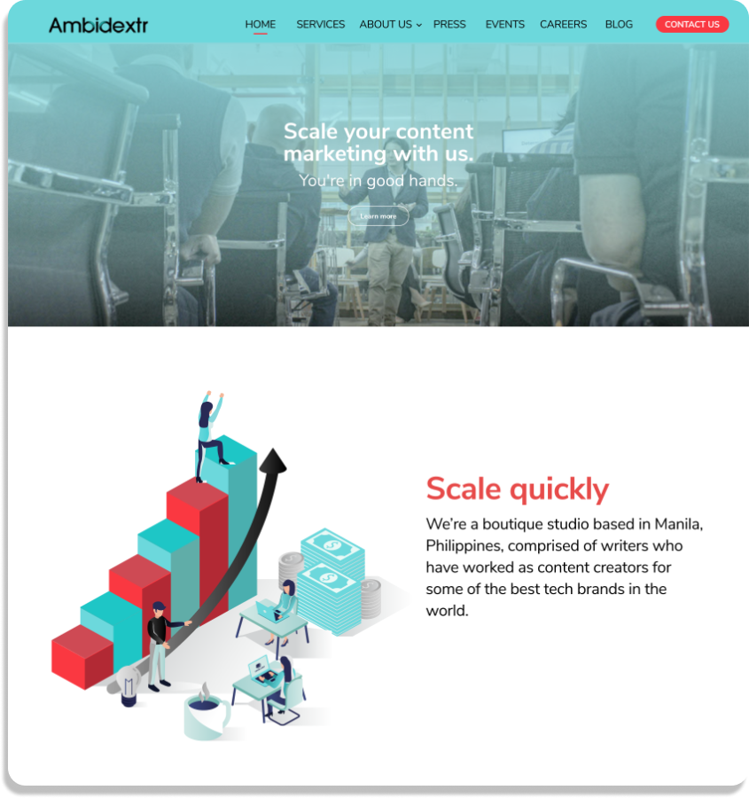
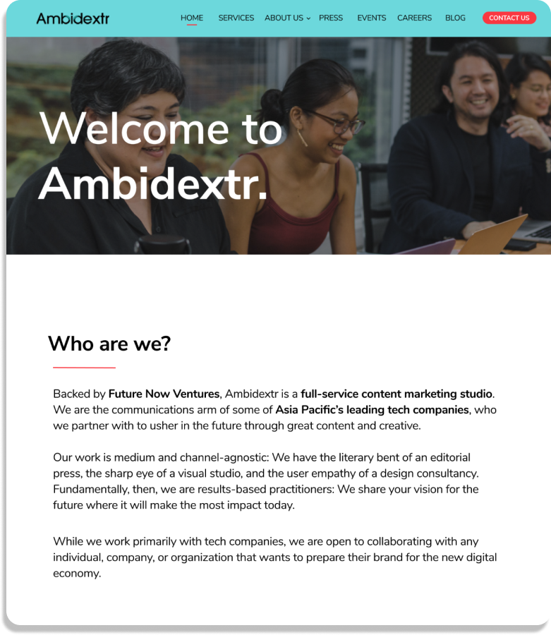
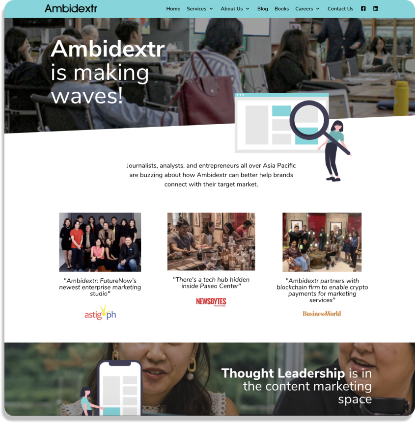
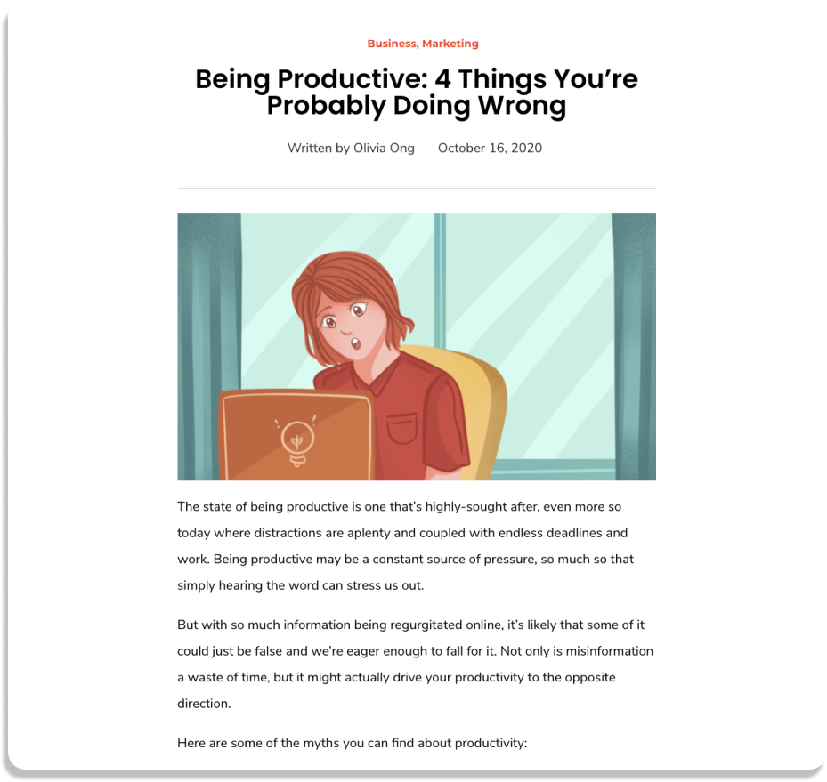
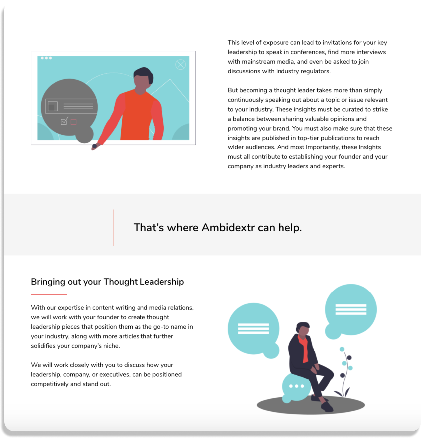
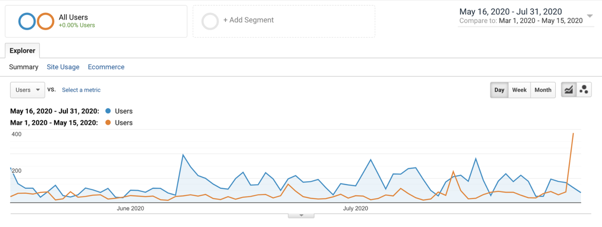
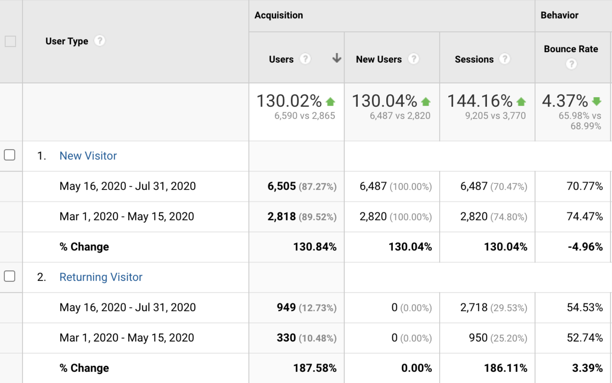

Ambidextr Media is a full-service content-marketing studio situated in Manila, Philippines. In March 2020, I joined the company as a UX Designer/Web Developer Intern where I led the re-design project. The goal was to re-design their site to attract talent and generate leads from a wide range of industries in the Asia Pacific. At Ambidextr, I collaborated with the CEO, Head of Growth (Ada Ortega) and a team of copywriters.
My Team
Project Lead (Me)
Head of Growth (Ada)
1 Copywriter (Lance)
Duration
Built over 3 weeks May - June 2020
Key Methods
User Research
User Personas
Figma
Adobe Illustrator
Wordpress Development
HTML/CSS/JS
Overall, the project led to a 4% decrease in bounce rates and 3 times more generated new and returning users. The site also attracted more talent to join the team!
To re-develop the official website of the Ambidextr Media and generate generate more traffic from startup and corporate executives whilst attracting talent to join the company.
The Challenge
Ambidextr Media is a full-service content-marketing studio situated in Manila, Philippines. The firm partners with some of the leading tech companies in the Asia Pacific to prepare them for the rising digital economy.
As a content marketing firm, the site must be interactive and attractive to attract all types of stakeholders. I was tasked to help generate more traffic from startup and corporate executives whilst attracting talent to join the company. From the copywriting, design, social media marketing and lead generation optimisation, my task was to ensure that all of these features came together to attract their potential clients.
Project Kickoff
Our Head of Growth, Ada, and I held several meetings with writers, designers and with the marketing team to receive feedback on the general look and usability of the site.
Mood/Tone
Due to the tone of the copywriting and branding of the company, we decided the mood of the site should be professional and sleek but fun and friendly which we applied when deciding the layout, visuals and primary colours of the site.
User Flow
One of the major feedbacks was the user flow. The user consumes too much time to get to their designated page. As part of the design process, we minimised the user flow as much as possible and making it convenient for the users.
Lead Generation Optimisation
Much emphasis was put on optimising the site for increased lead generation capture rate. Given this, we applied sales funnel concepts to the design along with consistent call to action buttons and texts.
High-fidelity Designs
An Impactful Hero Section & Landing Page
We needed to generate a strong first impression when the users land on the website. The design puts emphasis on their slogan "Scale your content marketing with us" to give the users an immediate idea of the kind of services Ambidextr provides.
User Flow
As mentioned, we wanted to decrease the time taken for the user to reach their target page and make it easier for users to navigate. Hence, we compressed the navigation bar and placed the essential page links in the footer.



Text Layout
Another problem we wanted to solve was to make sure visitors would actually read the long copywriting on the pages. We mainly faced this problem on the “Services” subpages and “Blog” pages which consisted of long paragraphs. Hence, we manipulated the white-spaces and layout to make the text stand out and carry out its purpose, which is to convince the visitors to contact Ambidextr and book a free consultation.


Consistent Call-to-Actions
The challenge was to make sure that visitors would end up contacting Ambidextr to generate more leads. In order to solve this, we made sure the design had an impact on the users by ensuring the text and buttons stood out among the elements on the pages.
Wordpress Development
The site was deployed on Wordpress. I mainly used Elementor to develop the site with configurations in Javascript and HTML/CSS. I was quite meticulous about the spacing of the elements and the font-size of the copywriting as included many paragraphs. This was also to ensure that it was as attractive and user-friendly on mobile as it is on the web.
Results
According to Google Analytics, the bounce rates decreased by 4% with 3 times more new and returning users generated in a span of 2 months. This also attracted more leads and talent to the company.


Key Takeaways
I learnt the importance of User Experience and what it truly meant to be a designer. As this was my first on-site internship as a UX Designer and Web Developer intern, it gave me the chance to explore the UX design process and to actually apply it on a project that could impact the company and their visitors.
To successfully build a product, user value and feedback from your stakeholders are more essential than ever. Throughout my internship, we held multiple workshops to gain better feedback for the site. It made me realised that it is feedback that helps you most with the design thinking process aside from user research.
Having partially collaborated with the marketing team, I learnt important marketing tips that helped me re-create the site from digital marketing to applying the sales funnel concept throughout the site.